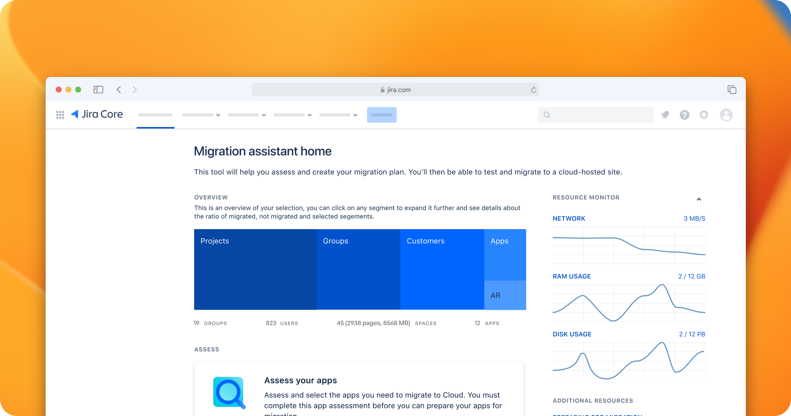

<!--<!DOCTYPE html>-->
<!--<html>-->

<!--<head>-->
<!--    <meta charset="utf-8" />-->
<!--    <title>Tessell Design System</title>-->
<!--    <link rel="icon" type="image/x-icon" href="/images/website_logo.svg">-->
<!--    <script src="https://cdn.tailwindcss.com"></script>-->
<!--    <link rel="stylesheet" href="styles/style.css" />-->
<!--    <link rel="stylesheet" href="styles/work_exp.css" />-->
<!--</head>-->

<!--<body>-->
<!--<div id="root-div">-->
<!--    -->
<!--    <div class="main scrollable newsreader-regular">-->
<!--        <div class="intro_title">-->
<!--            Creating a Design System built for Scalability.-->
<!--        </div>-->
<!--        <div class="intro_desc">-->
<!--            When I joined Tessell, I had the responsibility of creating our design system helped us moved faster together. When I started, I found out there existed a figma file called “Brand Book” which was lacking crucial component styles minimal, was seldomly used, heavily under-documented and failed to translate into the front-end system. By the time I was done with the project, I had established principles and values for design system, a through component library, documentation and a practice of critique and governance on the design side to evolve the system, and had kick-started the process on the engineering side to make the design system a shared priority between design and engineering.-->
<!--        </div>-->
<!--        <div class="intro_subtitle">-->
<!--            Impact-->
<!--        </div>-->
<!--        <div class="intro_desc">-->
<!--            We immediately saw an increase in cohesion and decrease in rogue components, and a faster pace of iterative and early design work. The governance process I established created more opportunities for designers to work together, getting early visibility into how the system was emerging across the product. Currently we are hiring a dedicated front engineer to pull the visual system into code.-->
<!--        </div>-->
<!--        <div class="line"></div>-->
<!--        <div class="intro_items">-->
<!--            <div class="intro_item">-->
<!--                <div class="intro_subtitle">-->
<!--                    Role-->
<!--                </div>-->
<!--                <div class="intro_item_value">-->
<!--                    Product Designer-->
<!--                </div>-->
<!--            </div>-->
<!--            <div class="intro_item">-->
<!--                <div class="intro_subtitle">-->
<!--                    Timeline-->
<!--                </div>-->
<!--                <div class="intro_item_value">-->
<!--                    2 months-->
<!--                </div>-->
<!--            </div>-->
<!--            <div class="intro_item">-->
<!--                <div class="intro_subtitle">-->
<!--                    Location-->
<!--                </div>-->
<!--                <div class="intro_item_value">-->
<!--                    Bengaluru-->
<!--                </div>-->
<!--            </div>-->
<!--        </div>-->
<!--        <div class="line"></div>-->
<!--        <div class="work_section">-->
<!--            <div class="work_left">-->
<!--                <div class="work_subtitle">-->
<!--                    Audit and Context-->
<!--                </div>-->
<!--                <div class="work_title">-->
<!--                    Understanding current structures-->
<!--                </div>-->
<!--            </div>-->
<!--            <div class="work_right">-->
<!--                <div class="work_highlight">-->
<!--                    <div class="work_highlight_title">-->
<!--                        Pretext-->
<!--                    </div>-->
<!--                    <div class="work_para">-->
<!--                        The reason this project came into existence was because few of the Tessell customers wanted to go self serve. Until this point Tessell customers were managed by Tessell SRE Team. Now for the self serve customers a more polished and consistent product was required. And for that design team identified a need for a proper design system.-->
<!--                    </div>-->
<!--                </div>-->
<!--                <div class="work_para">-->
<!--                    When I was assigned the task of making the design system, my first task was check my available inventory.-->
<!--                </div>-->
<!--                <div class="work_para">-->
<!--                    I found out during Tessell’s infancy, a design studio had constructed a basic design system. But as I interviewed designers, I realized we had far outgrown the design system. Designers usually built each component from scratch for each feature request and often resorted to using font styles, sizes, colors beyond the design system as the design system didn’t cater their needs.-->
<!--                </div>-->
<!--                <div class="work_para">-->
<!--                    So I set out to take an audit of the product to take a note of these inconsistencies. As the product had grown to a massive size with multiple app families with multiple apps in each, I decided to do a stochastic sampling of pages. I then listed out the font and color variants used in each, and also tagged if those existed in the current design system. I also took note of the figma file for each page and noted the inconsistencies that arose going from figma to finished product.-->
<!--                </div>-->
<!--                -->
<!--            </div>-->
<!--        </div>-->
<!--    </div>-->

<!--    <div class="next-project footer-content">-->
<!--        <div class="footer-header">-->
<!--            <div class="footer-header-title">-->
<!--                Next Project-->
<!--            </div>-->
<!--            <div class="line"></div>-->
<!--        </div>-->
<!--        <div class="next-project-content">-->
<!--            -->
<!--            <div class="next-project-right">-->
<!--                <div class="work-item-logo">-->
<!--                    -->
<!--                </div>-->
<!--                <div class="work-item-subtitle">-->
<!--                    Tessell | 2024-->
<!--                </div>-->
<!--                <div class="work-item-title">-->
<!--                    Enterprise Design System-->
<!--                </div>-->
<!--                <div class="work-item-desc">-->
<!--                    Streamlining design and development processes resulting in significantly boosted product consistency & employee productivity-->
<!--                </div>-->
<!--                <div class="work-item-tags">-->
<!--                    <div class="tag">Enterprise</div>-->
<!--                    <div class="tag">Governance</div>-->
<!--                </div>-->
<!--            </div>-->
<!--        </div>-->
<!--    </div>-->
<!--    <div class="line"></div>-->
<!--    <div class="contact footer-content">-->
<!--        <div class="contact-wrapper">-->
<!--        <div class="footer-content-left">-->
<!--            <div class="footer-content-title">-->
<!--                Contact Me-->
<!--            </div>-->
<!--        </div>-->
<!--        <div class="footer-content-right instrument-sans-regular">-->
<!--            <div class="footer-content-right-menu">-->
<!--                <a href="https://drive.google.com/file/d/15-bTJhYYc6J9FXKtLq1aEghXDM9GDs9k/view" target="_blank">Resume</a>-->
<!--                <a href="https://www.linkedin.com/in/krunalprajapati26/" target="_blank">LinkedIn</a>-->
<!--                <a href="mailto:26.krunal@gmail.com" target="_blank">Email</a>-->
<!--            </div>-->
<!--        </div>-->
<!--        </div>-->
<!--    </div>-->
<!--</div>-->
<!--<script src="index.js" type="module"></script>-->
<!--</body>-->

<!--</html>-->

<!DOCTYPE html>
<html lang="en">
    <head>
        <meta name="viewport" content="width=device-width, initial-scale=1.0">
        <meta charset="utf-8" />
        <title>Tessell Design System</title>
        <link rel="icon" type="image/x-icon" href="/images/website_logo.svg">
<!--        <script src="https://cdn.tailwindcss.com"></script>-->
        <link rel="stylesheet" href="styles/style.css" />
        <link rel="stylesheet" href="styles/work_exp.css" />
    </head>

<body>
<div id="root-div">
    <!-- Hero Image -->
    

    <!-- Intro Section -->
    <div class="main scrollable newsreader-regular">
        <div id="intro-title" class="intro_title"></div>
        <div id="intro-desc" class="intro_desc"></div>
        <div id="intro-text" class="intro_text"></div>

        <!-- Intro Items -->
        <div class="line"></div>
        <div id="intro-items" class="intro_items"></div>
        <div class="line"></div>
        <!-- Sections -->
        <div id="sections-container" class="sections"></div>
    </div>

    <!-- Next Project Section -->
    <div class="next-project footer-content">
        <div class="footer-header">
            <div class="footer-header-title">Next Project</div>
            <div class="line"></div>
        </div>
        <div id="next-project-container" class="next-project-content"></div>
    </div>

    <!-- Contact Section -->
    <div class="line"></div>
    <div class="contact footer-content">
        <div class="contact-wrapper">
            <div class="footer-content-left">
                <div class="footer-content-title">Contact Me</div>
            </div>
            <div class="footer-content-right instrument-sans-regular">
                <div class="footer-content-right-menu">
                    <a href="https://drive.google.com/file/d/15-bTJhYYc6J9FXKtLq1aEghXDM9GDs9k/view" target="_blank">Resume</a>
                    <a href="https://www.linkedin.com/in/krunalprajapati26/" target="_blank">LinkedIn</a>
                    <a href="mailto:26.krunal@gmail.com" target="_blank">Email</a>
                </div>
            </div>
        </div>
    </div>
</div>
<script src="scripts/design_system.js" type="module"></script>
<!--<script src="index.js" type="module"></script>-->
</body>

</html>